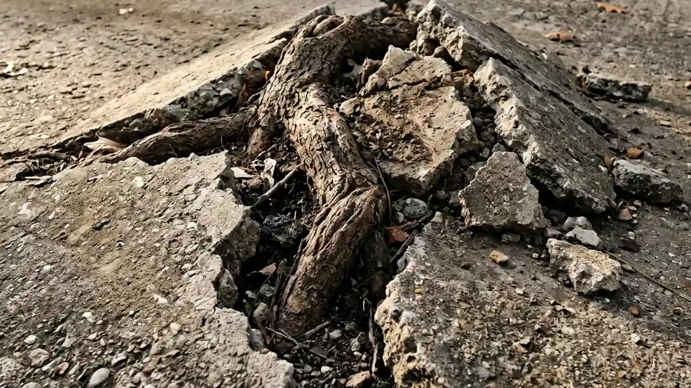
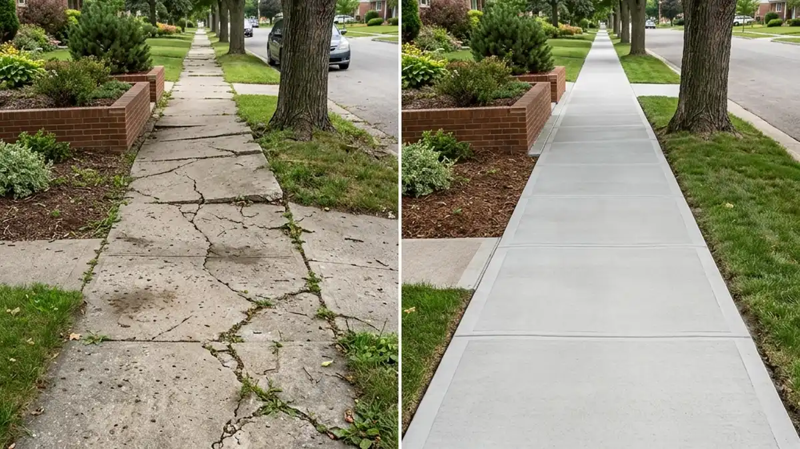

Concrete is renowned for its strength and durability, but it isn't completely invincible. In Davie, FL, intense sun, heavy torrential rains, and aggressive root systems can cause cracks, spalling, and surface damage to your driveways, sidewalks, and patios. When these issues arise, your first instinct is likely to search for "concrete repair near me". But how do you sift through the results to find a contractor who will actually fix the root cause of the problem?
Understanding Concrete Damage in South Florida
Before hiring a contractor, it helps to understand why your concrete is failing. The sub-tropical climate of South Florida creates specific challenges:
- Thermal Expansion: Concrete expands in the intense heat and contracts when it cools. Without proper control joints, this movement leads to cracking.
- Soil Washout: Heavy summer thunderstorms can erode the sandy soil underneath your slabs, causing them to crack under their own weight.
- Tree Roots: Oak and Ficus roots are notorious for growing under sidewalks and driveways, heaving the concrete upward.

Why Quick Fixes Don't Last
When searching for "concrete repair near me", beware of contractors offering unbelievably low prices. Cheap repairs often involve simply smearing a layer of hydraulic cement or caulking over the crack. While it might look okay for a week, the underlying issue—whether it's soil settlement or a lack of expansion joints—remains completely unresolved. The crack will almost certainly reappear within months.
A professional repair involves routing out the crack, stabilizing the subgrade if necessary, and using high-strength epoxy or polyurethane injection resins that bond tightly to the existing concrete and prevent water intrusion.
Questions to Ask Your Concrete Repair Contractor
To ensure you're getting top-tier service, ask these questions before signing a contract:
- Can you explain the root cause of the damage? A reputable expert will diagnose the "why" before explaining the "how."
- What repair materials do you use? Ensure they are using commercial-grade resurfacers or epoxies, not cheap hardware store patch kits.
- Can you match my existing finish? Whether your concrete is plain, broom-swept, or stamped, a skilled contractor can blend the repair seamlessly.

Why Choose Davie Concrete?
At Davie Concrete, our expertise spans across all aspects of structural and decorative concrete. We take immense pride in utilizing the highest grade materials and advanced techniques. When you trust us with your concrete repair, we don't just patch the surface; we address the structural integrity to ensure the repair stands the test of time.
If you're dealing with unsightly cracks, sinking slabs, or surface spalling, stop scrolling through pages of "concrete repair near me" results and give the local experts a call. We'll restore your concrete's beauty and safety!